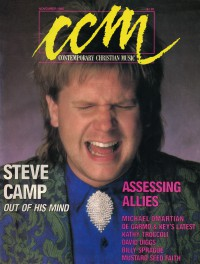

Steve CampOn the cover|  | November 1986
CCM | Media coverage:- Jan 1980 in CCM "Talent: Steve Camp", by Bob Darden
- Oct 1980 in Campus Life "Alone With Death", by Steve Camp, Jim Long
- Nov 1980 in Campus Life "Show Time: Music or Message", by Jim Long
- Jan 1982 in CCM "Records: Getting Back to Basics With Steve Camp", by Paul Baker
- Aug 1982 in CCM "Performance: The Archers, Camp and Isaac Color the Rainbow", by Devlin Donaldson
- 1982 in New Christian Music "Steve Camp"
- Jan 1985 in Campus Life "In Their Own Words: Steve Camp"
- Jul 1985 in MusicLine "Christian Musician: Advice to Young Musicians"
- Sep 1985 in CCM "People & Places: Steve Camp"
- May 1986 in Heaven's Metal "Steve Camp", by Doug Van Pelt
- Sep 1986 in CCM "In Concert: Paramount Theatre, Austin, TX", by Todd Gratehouse
- Nov 1986 in CCM "The Grace That Covers Him", by Thom Granger
- Nov 1986 in CCM "In Concert: Singin' In The Rain: Greenbelt '86, Castle Ashby Park, Northamptonshire, England", by Lorne F. Anderson
- 1987 in Premiere "Steve Camp"
- Jan 1988 in Campus Life "Christian Music: The State of The Art", by Jim Long
- 1988 in Premiere "Steve Camp"
- Jan 1989 in CCM "Notebook: Steve Camp, Tony Campolo Join to Help Aids Victims"
- Spr 1989 in Harvest Rock Syndicate "Concert Review: Wheaton College, Wheaton, IL", by Mary Kay Fincher
- 12 May 1989 in Christianity Today "Arts: Artbriefs: Beyond Sunday Morning", by Daniel Coran
- Sum 1989 in Harvest Rock Syndicate "When Compassion Equals Justice", by Bernie Bernard
- Sep 1991 in CCM "A (Steve) Camp Meeting", by Bernie Sheahan
- Apr 1992 in Religious Broadcasting "Waking The Church to World Needs", by Devlin Donaldson
- Apr 1993 in The Lighthouse "Steve Camp", by J. Warner Soditus
- Jul 1993 in CCM "Steve Camp's Balancing Act", by April Hefner
- Jul 1993 in CCM
- May 1995 in Religious Broadcasting "Music Matters: Be Careful Who You Promote"
- Jun 1997 in CCM "Confronting A Deadly Disease, Can the Church Overcome Its Fears and Prejudice", by April Hefner
- Jan 1998 in CCM "On The Beat: Reformation Rumble", by Lindy Warren
- Aug 1998 in CBA Marketplace "Is There Life In The Lyrics?", by Margaret Feinberg
- May 1999 in CCM "What Makes Music Christian?: What Makes Music Christian?", by Steve Rabey
- Mar 2000 in 7ball "Channelsurfing", by Kyle Minor
Albums & reviews:1978: Sayin' It With Love1980: Start Believing1981: For Every Man1983: Only the Very Best1983: Fire and Ice1984: It's a Dying World1985: Shake Me To Wake Me1986: One on One1987: After God's Own Heart1988: Compact Favorites1989: Justice1990: Doing My Best1991: Doing My Best Volume 21991: Consider the Cost1993: Taking Heaven By Storm1993: Sold Out1994: Mercy in the Wilderness1995: The Steve Camp Collection1999: Abandoned To God2002: Desiring God Award Summary (Nominations / Wins)Dove AwardsBooks about Steve CampPublished articles:1 article credited in Campus Life: 1980.3 articles credited in CCM: 1988 - 1995.1 article credited in Premiere: 1988. |